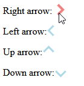

now we use css in a more sophisiticated way and create an arrow with css.
Look at the box and rotated box (see stlye.css) and try to figure out how you could create an arrow out of that :)
when you hover, the color should change and it should become "thicker"

Box
Box rotated:
Right arrow:
Left arrow:
Up arrow:
Down arrow:
this is not perfect, but gives an idea what can be done with css.
if you are done, prepare for the next hour (I heard there will be a test soon, maybe check the w3c schools to refresh your memory a little)